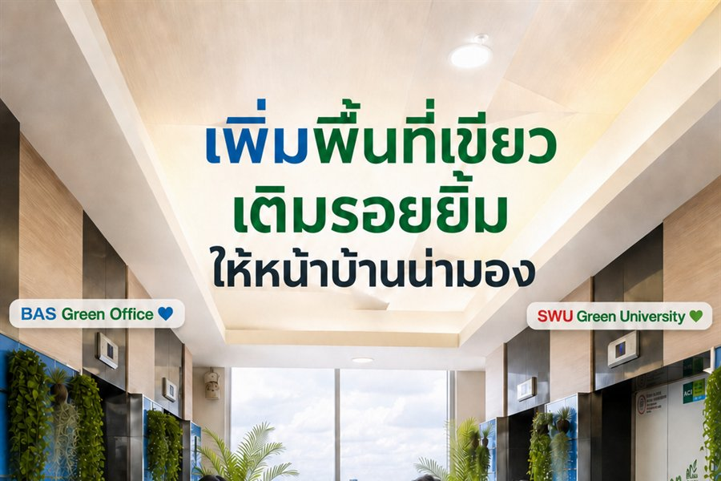

สิงหาคม 2568
E-Waste Collection Drive
กิจกรรมทิ้งขยะอิเล็กทรอนิกส์
เปิดจุดรับขยะอิเล็กทรอนิกส์ให้นิสิตและบุคลากรนำมาทิ้งอย่างถูกวิธี
Sustainability
ความยั่งยืน
นโยบายและการดำเนินงานด้านความยั่งยืนของคณะ ครอบคลุมสามเสาหลัก สิ่งแวดล้อม สังคม และธรรมาภิบาล
Pillar 1 · E
สิ่งแวดล้อม
ลดผลกระทบต่อสิ่งแวดล้อมจากการดำเนินงานของคณะ ตั้งแต่การใช้ทรัพยากรในสำนักงานจนถึงกิจกรรมร่วมกับนิสิตและบุคลากร
สิงหาคม 2568
กิจกรรมทิ้งขยะอิเล็กทรอนิกส์
เปิดจุดรับขยะอิเล็กทรอนิกส์ให้นิสิตและบุคลากรนำมาทิ้งอย่างถูกวิธี
ESG STAR Award
โครงการร่วมกับ ECO LIFE
โครงการร่วมกับ ECO LIFE พร้อมประกาศรางวัล ESG STAR เพื่อยกย่องแนวทางความยั่งยืน
Green Office 2568
สำนักงานสีเขียว
ออกแบบและใช้งานสำนักงานที่ช่วยประหยัดพลังงาน ตามเกณฑ์สำนักงานสีเขียว 6 หมวด
นโยบาย Green Meetings
ประชุมในรูปแบบ e-Meeting และเลือกใช้วัสดุที่เป็นมิตรต่อสิ่งแวดล้อม เพื่อลดการใช้กระดาษและการเดินทาง
มาตรการที่ดำเนินการ
Green Office & Green Award
สำนักงานสีเขียวคืออะไร
“สำนักงานและกิจกรรมต่าง ๆ ภายในสำนักงาน ที่ส่งผลกระทบต่อสิ่งแวดล้อมน้อยที่สุด”
ใช้ทรัพยากรและพลังงานอย่างประหยัด พร้อมระบบจัดการของเสียที่มีประสิทธิภาพ ครอบคลุมตั้งแต่การออกแบบอาคาร การจัดหาอุปกรณ์ ไปจนถึงพฤติกรรมของบุคลากร

กำหนดนโยบายและแผนพัฒนาสำนักงานสีเขียวของคณะอย่างต่อเนื่อง
ส่งเสริมความรู้และการมีส่วนร่วมด้านสิ่งแวดล้อมแก่บุคลากรและนิสิต
บริหารจัดการการใช้น้ำ ไฟฟ้า และทรัพยากรสำนักงานอย่างรู้คุณค่า
คัดแยกและลดปริมาณของเสียจากการดำเนินงานภายในสำนักงาน
ดูแลสภาพแวดล้อมการทำงานให้ปลอดภัยและถูกสุขลักษณะ
เลือกใช้สินค้าและบริการที่เป็นมิตรต่อสิ่งแวดล้อม
นโยบายการจัดการสำนักงานสีเขียว และคู่มือการดำเนินงาน Green Office — รายงานผลตามปีการศึกษา 2568 และ 2569
Pillar 3 · G
ธรรมาภิบาล
ความโปร่งใสในการดำเนินงานและช่องทางตรวจสอบ
Annual Report
รายงานประจำปี
เผยแพร่ผลการดำเนินงานตามแผนปฏิบัติการของคณะเป็นประจำทุกปี
Transparency
การประเมินคุณธรรมและความโปร่งใส
ส่งเสริมคุณธรรมและความโปร่งใสในการดำเนินงานของหน่วยงานภาครัฐ
ปีงบประมาณ 2568
แผนป้องกันทุจริต
แผนปฏิบัติการป้องกันทุจริตและส่งเสริมคุณธรรมของคณะ
Pillar 2 · S
Social
สังคม
นำความเชี่ยวชาญด้านบริหารธุรกิจไปสร้างผลกระทบเชิงบวกต่อสังคม ผ่านหลักสูตรอบรมและกิจกรรมร่วมกับชุมชน
SWU SE Training · หลักสูตรอบรมเพื่อสังคม 3 หลักสูตร
Course 01
Taxation for Retirement-Age Entrepreneurs
ภาษีสำหรับผู้ประกอบการวัยเกษียณ
ความรู้ด้านภาษีและการวางแผนการเงินสำหรับผู้ประกอบการวัยเกษียณ
Course 02
Building an ESG Organisation
การพัฒนาองค์กร ESG
ยกระดับวิสาหกิจเพื่อสังคมให้เติบโตอย่างยั่งยืนตามแนวทาง ESG
Course 03
Entrepreneur Readiness
เตรียมความพร้อมผู้ประกอบการ
พัฒนาทักษะที่จำเป็นสำหรับผู้ประกอบการรุ่นใหม่
ESG Activity Indicators · ตัวชี้วัดกิจกรรม ESG